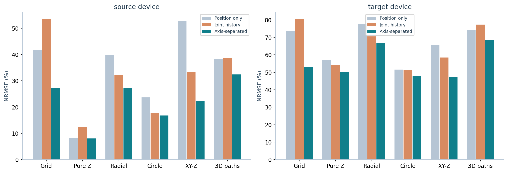
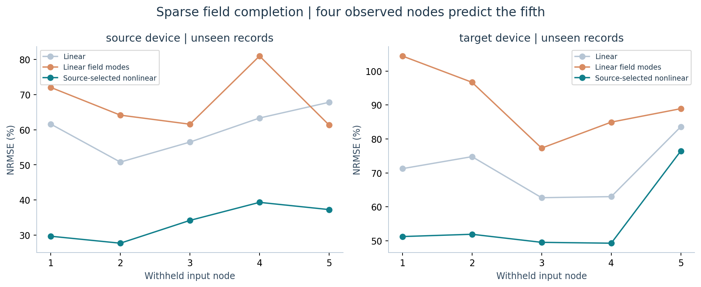

产生数据 → 重复对照 → 机制消融 → 神经网络研究
648条记录、216组动作条件、约34万帧15维磁场；约19秒生成9.44小时累计虚拟动作的数据。已重新训练自己的Z网络，并完成标准、复杂轨迹和压深/速度/停驻/反转扫描。不替换正式模型。
进入完整实验室：逐条件三维回放、Z消融、错误状态恢复与数据下载 →
数据生成耗时不包括训练和逆解回放；配对虚拟记录不是独立器件重复。经验仿真与实物记录严格区分。
仿真能否重新导向相同的研究思路？
用1694个虚拟静态标定点、12条标准虚拟训练动作、6条验证动作，重新建立自己的磁图、记忆基和同架构因果XY头；不载入正式逆模型权重。测试6类标准动作、180个独立静止点和60条未见复杂虚拟路径，五次初始化全部报告。

同一路径和噪声，历史开关使静态逆解XY误差从0.096增至0.363 mm；磁场域记忆降至0.242 mm。静态锚点将动态网络造成的静止点偏移从0.159减至0.102 mm。目的是复现问题、机制与权衡，不是筛选替代正式模型。
补充：冻结正式算法的同流闭环
六类标准虚拟动作、60条复杂虚拟动作和30条真实记录运行冻结算法。查看正式算法闭环与三维重建对照 ↓ · 查看混淆搜索、实测历史与候选实验报告
下表只评价正向磁响应预测：切向与垂直动作增量分别送入0.3、1、4秒的记忆状态。仅用源器件训练和选参，全部目标器件与实测复杂三维路径留出。正向预测误差不是XYZ重建误差。
| 真实留出记录 | 联合历史 NRMSE | 分轴历史 NRMSE | 相对变化 |
|---|
60 条复杂单触头虚拟动作 · 三维回放
包含六类独立随机生成动作；不复制实测留出路径。显示全部压入与撤出段，不平滑坐标。拖动画布旋转视角。
坐标为生成动作，名义压深为正。下方为经验模型预测后叠加源侧无载段估计噪声的虚拟 ΔB，不是传感器实测。
| 节点 | Bx | By | Bz / µT |
|---|
显示从序列起点到当前时刻的路径；撤出后模型保留衰减磁记忆。形变与多触点不由本经验模型生成。
完整导出文本（下载的备用入口）
第五项探索 · 四节点预测留出的第五节点
只读取四个节点当前／过去的磁响应，不读取该帧的第五节点、不读取指令 XYZ。源侧标准动作训练；30 条完整记录 × 5 个节点，共 150 个配对评估。
真实留出对照 · 不仅看好看的虚拟轨迹


正式算法闭环 · 同流模块对照与真实节点补全
冻结的完整 Python 算法已离线读取当前／过去磁场。本页回放它的实际输出，不是将输入动作当作重建结果，也不是浏览器实时推理。统一 10 Hz；不平移、不平滑、不事后对时。
黑虚线：动作参考。蓝线：选定算法／补全输入的重建。灰线：冻结完整算法的对照输出。无效输出断线，不以零坐标代替。